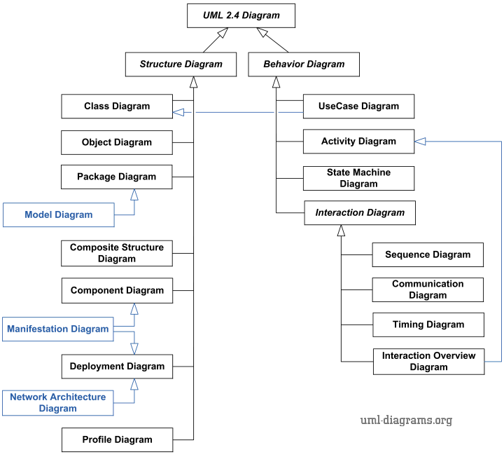
Diagram UML
UML adalah singkatan dari "Unified Modeling Language," atau dalam bahasa indonesia yaitu "bahasa pemodelan terpadu "yang digunakan dalam rekayasa perangkat lunak, perencanaan sistem, dan dokumentasi desain untuk menggambarkan berbagai aspek dari sistem perangkat lunak yang akan dibangun.
UML menyediakan sejumlah UML menyediakan sejumlah notasi grafis yang digunakan untuk menggambarkan elemen-elemen dalam sistem perangkat lunak, seperti kelas, objek, use case, aktivitas, komponen, dan lainnya. Melalui notasi-notasi ini, UML membantu dalam
UML memiliki berbagai jenis diagram, seperti diagram kelas, diagram use case, diagram aktivitas, dan banyak lainnya, yang masing-masing memiliki tujuan dan notasi khusus untuk menggambarkan aspek tertentu dari sistem perangkat lunak. Penggunaan UML dapat sangat bervariasi tergantung pada fase proyek perangkat lunak yang sedang berjalan, kebutuhan analisis, dan preferensi tim pengembang.
Dengan menggunakan UML, pengembang perangkat lunak dapat menggambarkan, merancang, dan mengelola sistem perangkat lunak dengan lebih efektif, yang pada gilirannya membantu dalam pengembangan produk yang lebih baik dan proyek yang lebih sukses.
Berikut diagram-diagram dalam UML:
Structural Diagram
A. Class diagram yaitu Untuk mengembangkan sebuah sistem, software engineer dan developer membutuhkan sebuah diagram. Diagram yang umum digunakan adalah diagram dari bahasa pemodelan UML (Unified Modeling Language), yang terdiri dari diagram perilaku dan diagram struktur. Memperlihatkan struktur sistem mulai dari kelas, sistem, atribut dan hubungan antar object
Fungsi :
1. Memvisualisasikan model data sebuah sistem, baik yang sederhana maupun dengan kompleks.
2. Membantu mengetahui kode spesifik tertentu yang perlu diprogram dan diimplementasikan ke struktur sistem yang telah direncanakan
3. Memperlihatkan bagaimana sistem bekerja, termasuk memperlihatkan hubungan antara komponen sistem
Komponen
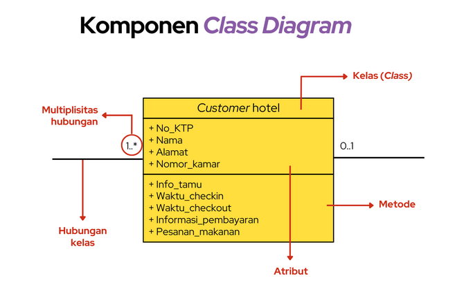
B. Object Diagram adalah diagram menghasilkan gambaran struktur model sebuah sistem, dalam kurun waktu tertentu. Diagram objek yang berasal dari class diagram, sehingga object diagram tergantung pada class diagram. Object Diagram, biasanya disebut sebagai Instance diagram, karena sangat mirip dengan class diagram. Seperti class diagram, Object Diagram juga mengerahkan hubungan antara objek, tetapi Object Diagram memakai contoh-contoh dunia nyata. Object diagram dipakai untuk mengambarkan bagaimana sistem akan terlihat seperti pada waktu tertentu. Karena ada data yang tersedia di object diagram sering dipakai untuk menjelaskan hubungan yang kompleks antara objek.
Fungsi :
1. Fungsi/Tujuan dari diagram harus dipahami dengan jelas untuk menerapkannya praktis. Tujuan dari Object Diagram yang mirip dengan Class Diagram. Perbedaannya adalah bahwa Class Diagram adalah model abstrak yang terdiri dari kelas dan hubungan mereka.
Komponen
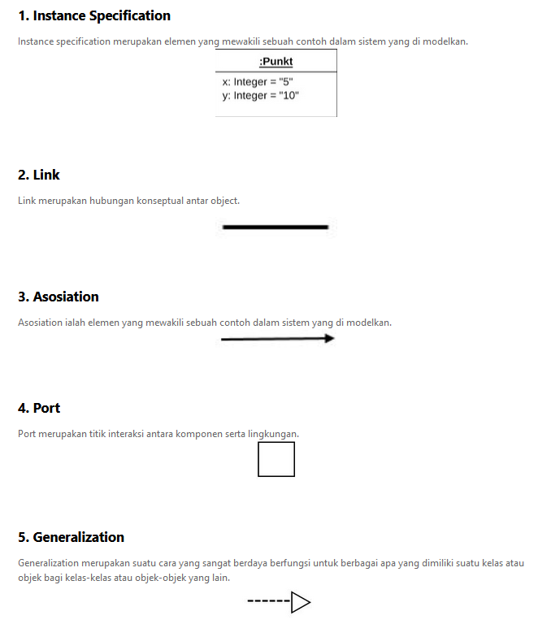
B. Package diagram atau diagram paket merupakan salah satu jenis UML yang dipakai untuk mengelompokkan elemen-elemen seperti use case maupun class diagram. Package diagram sendiri sangat jarang digunakan dalam pemuatan sistem dengan skala kecil, sebab memang tidak terlalu dibutuhkan.Artinya package diagram digunakan hanya dalam pengembangan sistem dengan skala besar. Tentu tujuan sendiri agar lebih mudah dalam melakukan penyusunan.
Fungsi :
1. Digunakan untuk mengelompokan use case diagram atau class diagram.
2. Untuk menunjukan sebuah elemen dikelompokan atau diorganisasikan.
Komponen
C. Composite Structure Diagram adalah diagram yang menggambarkan struktur internal dari pengklasifikasi terstruktur dengan menggunakan bagian, pelabuhan, dan konektor. Sebuah penggolong terstruktur mendefinisikan pelaksanaan penggolongan dan dapat mencakup kelas, komponen, atau penempatan node. memakai Composite Structure Diagram untuk menunjukkan rincian internal penggolongan dan untuk menggambarkan objek dan peran yang bekerja sama untuk melakukan perilaku yang mengandung penggolongan. Sebuah Composite Structure Diagram mirip dengan class diagram, tetapi menggambarkan bagian-bagian individu, bukan seluruh kelas. Sebelum Anda dapat menentukan struktur internal penggolongan, Anda juga harus menunjukkan wadah struktur atau membuka sebuah Composite Structure Diagram.
Fungsi :
1. diagram yang menggambarkan struktur internal dari pengklasifikasi terstruktur dengan menggunakan bagian, pelabuhan, dan konektor.
Komponen

D. Diagram component atau komponen diagram ialah sesuatu yang digunakan untuk memperlihatkan sebuah organisasi serta keterkaitan dan ketergantungan diantara kumpulan komponen dalam sebuah sistem.
Fungsi :
1. Sebagai framework sistem, dimana dalam hal ini memiliki tujuan untuk mempermudah perawatan dan pengelolaan dari sistem.
2. Sebagai source code perangkat lunak (software).
Komponen
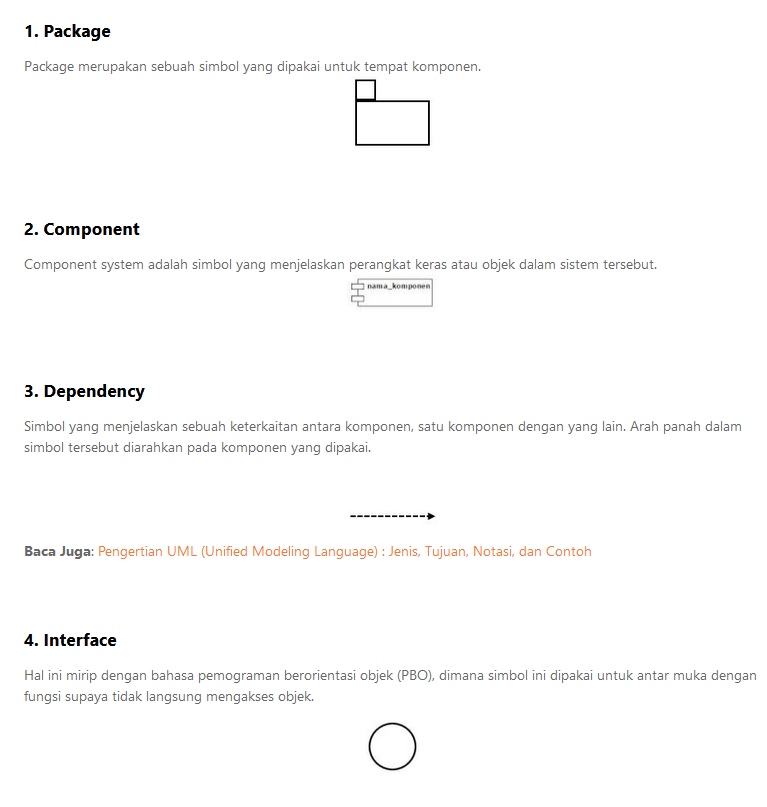
E. Deployment Diagram adalah salah satu model diagram dalam UML untuk mengerahkan artefak dalam node. Deployment diagram digunakan untuk memvisualisasikan hubungan antara software dan hardware. Secara spesifik deployment diagram dapat membuat physical model tentang bagaimana komponen perangkat lunak (artefak) digunakan pada komponen perangkat keras, yang dikenal sebagai node. Ini adalah salah satu diagram paling penting dalam tingkat implementasi perangkat lunak dan ditulis sebelum melakukan coding.
Fungsi :
1. Membangun file-file yang dapat dieksekusi dengan menggunakan teknik forward dan reverse engineering
2. Memvisualisasikan komponen dari suatu sistem.
Komponen
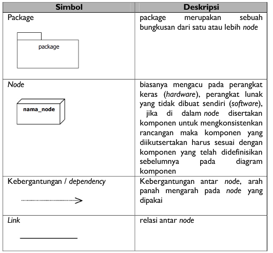
E. mendefinisikan dan memodelkan berbagai elemen sistem berdasarkan domain atau platform tertentu.
Fungsi :
1. Penciptaan metamodel baru
2. Ekstensi dan modifikasi metamod UML.
Komponen
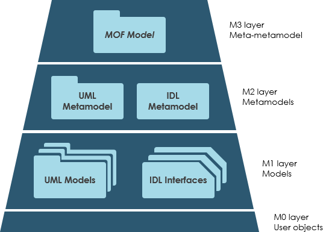
Behavioral Diagram
A. Activity Diagram merupakan rancangan aliran aktivitas atau aliran kerja dalam sebuah sistem yang akan dijalankan. Activity Diagram juga digunakan untuk mendefinisikan atau mengelompokan aluran tampilan dari sistem tersebut. Activity Diagram memiliki komponen dengan bentuk tertentu yang dihubungkan dengan tanda panah. Panah tersebut mengarah ke-urutan aktivitas yang terjadi dari awal hingga akhir.
Fungsi Activity Diagram
1. Memperlihatkan urutan aktifitas proses pada sistem.
2. Membantu memahami proses secara keseluruhan.
3. Activity Diagram dibuat berdasarkan sebuah atau berapa use case.
4. Menggambarkan proses bisnis dan urutan aktivitas dalam sebuah proses.
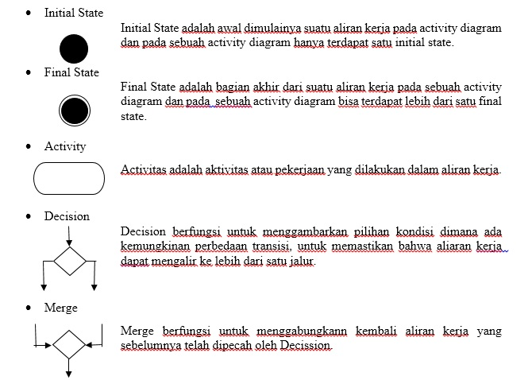
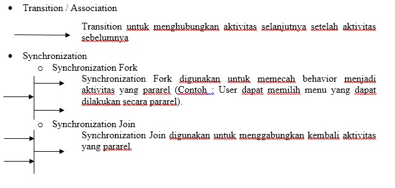
B. Use case diagram merupakan diagram yang menggambarkan hubungan antara aktor dengan sistem. Use case diagram bisa mendeskripsikan sebuah interaksi antara satu atau lebih aktor dengan sistem yang akan dibuat. Use case diagram juga bisa digunakan untuk mengetahui fungsi apa saja yang ada di dalam sebuah sistem dan bisa juga mempresentasikan sebuah interaksi aktor dengan sistem. Komponen tersebut kemudian menjelaskan komunikasi antara aktor, dengan sistem yang ada.
Use case diagram mempunyai 3 komponen ,yaitu :
1. Sistem
Menyatakan batasan sistem dalam relasi dengan aktor-aktor yang menggunakannya (di luar sistem) dan fitur-fitur yang harus disediakan (dalam sistem).
2. Aktor
Aktor adalah segala hal diluar sistem yang akan menggunakan sistem tersebut untuk melakukan sesuatu. Bisa merupakan manusia, sistem, atau device yang memiliki peranan dalam keberhasilan operasi dari sistem.
3. Use Case
Use Case sendiri adalah gambaran fungsional dari sebuah sistem. Dengan demikian, antara konsumen dan juga pengguna pada sistem tersebut, akan mengerti atau paham mengenai fungsi sistem yang tengah dibangun.

C. State Machine Diagram atau disebut juga sebagai Statechart diagram, merupakan diagram untuk menggambarkan transisi dan perubahan keadaan (dari satu state ke state lainnya) suatu objek dalam suatu sistem. Dinamakan state machine karena diagram tersebut pada dasarnya adalah mesin yang menggambarkan beberapa keadaan suatu objek dan bagaimana objek tersebut berubah berdasarkan kejadian internal ataupun eksternal.
Fungsi
1. diagram yang menggambarkan transisi dan perubahan keadaan (dari satu state ke state lainnya) suatu objek pada program sebagai akibat dari stimulans yang diterima.
Komponen :
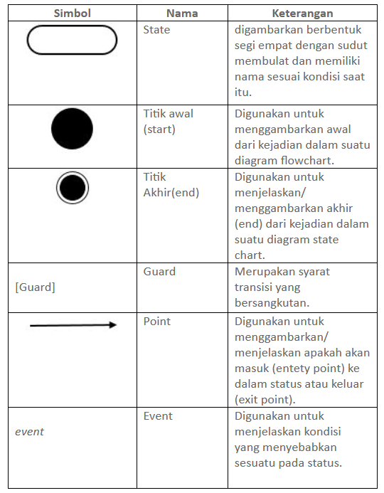
D. Interaction Overview Diagram adalah pencangkokan secara bersama antara activity diagram dengan sequence diagram. Interaction Overview Diagram dapat dianggap sebagai activity diagram dimana semua aktivitas diganti dengan sedikit sequence diagram, atau bisa juga dianggap sebagai sequence diagram yang dirincikan dengan notasi activity diagram yang digunakan untuk menunjukkan aliran pengawasan.
Fungsi
1. pembuatan diagram urutan adalah untuk mengetahui urutan kejadian yang dapat menghasilkan output yang diinginkan. Selain itu, tujuan dari diagram urutan ini mirip dengan activity diagram loh, seperti menggambarkan alur kerja dari sebuah aktivitas, serta dapat menggambarkan aliran data dengan lebih detail, termasuk data atau perilaku yang diterima atau dikirimkan.
Komponen
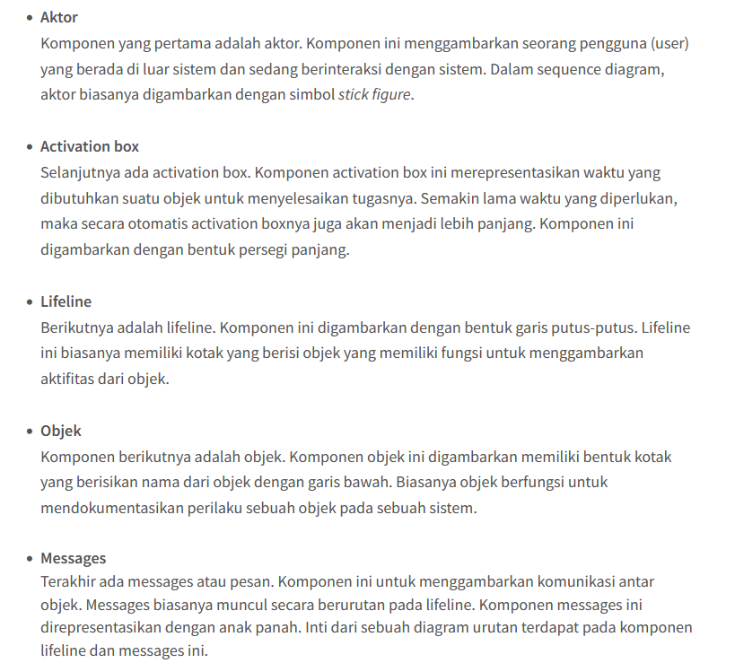
E. Apa itu sequence diagram? Sequence diagram adalah contoh diagram Unified Modeling Language (UML) yang memvisualisasikan alur interaksi antar objek atau komponen pada suatu proses atau sistem.
Fungsi :
1. Representasi Visual Tujuan pertama dari sequence diagram adalah untuk memberikan gambaran yang jelas dari aliran proses atau sistem. Detail penggunaan UML dapat digambarkan dengan jelas
menggunakan sequence diagram, sehingga dapat membantu memahami persyaratan dan fungsionalitas sistem.
2. Memodelkan Langkah Anda akan lebih mudah dalam mengidentifikasi potensi masalah ketika langkah-langkah yang dibutuhkan dalam suatu proses telah dipetakan secara visual. Karena itulah, penggunaan sequence diagram adalah keputusan yang tepat untuk memodelkan operasi yang kompleks, logika dari prosedur, atau fungsi.
3. Memantau Proses Manfaat berikutnya yang bisa Anda peroleh dengan memakai sequence diagram adalah kemudahan untuk melihat objek dan komponen berbeda melakukan interaksi satu sama lain untuk menyelesaikan sebuah proses. Selain itu, Anda juga dapat mengidentifikasi area mana saja yang komunikasi atau koordinasinya perlu ditingkatkan. Hal tersebut bisa dipantau tentu saja karena ada representasi hubungan antara berbagai bagian sistem.
4. Memahami Kebutuhan Sistem Terakhir, pemetaan melalui sequence diagram adalah langkah untuk memahami fungsionalitas detail dari skenario yang ada atau yang akan datang. Sehingga dapat diidentifikasi potensi sumber daya tambahan atau kebutuhan sistem secara dini.
Sequence Diagram Adalah: Pengertian, Simbol, dan Manfaatnya
Komponen
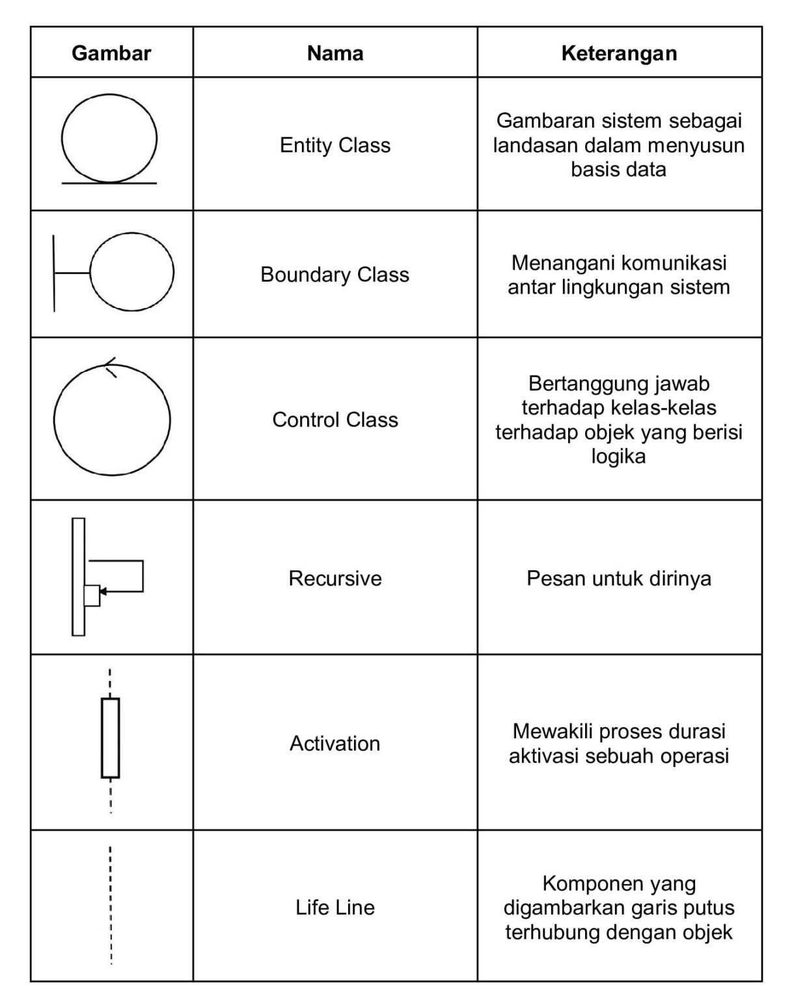
F. Communication Diagram adalah suatu diagram yang mengambarkan struktur interaksi yang terdapat disekitar objek (seperti halnya sequence diagram) dan hubungannya terhadap yang lainnya.
Communication Diagram lebih mengedepankan peran setiap objek dan bukan pada waktu pengiriman pesan (message).
Communication diagram mirip dengan sequence diagram. Yang membedakan Communication diagram dari yang lain adalah diagram yang mengarahkan objek-objek dan asosiasi dengan objek-objek yang lain dalam sistem bersamaan dengan interaksinya. Asosiasi ini tidaklah dijelaskan dalam sequence diagram.
Fungsi :
1. Model pesan melalui antar peran atau objek yang mengirimkan operasi penggunaan dan fungsionalitas kasus.
2. Mekanisme model dalam desain arsitektur system. logika dari prosedur, atau fungsi.
3. Model skenario alternatif dalam kasus pemakaian atau operasi yang melibatkan kolaborasi dari berbagai interaksi dan objek.
4. Tangkap interaksi yang mengarahkan pesan yang dilewati antar peran dan objek dalam skenario kolaborasi.
Komponen
1. Object : Objek adalah instance dari sebuah kelas yang tersusun secara horizontal. Digambarkan sebagai sebuah kelas (kotak) dengan nama objek didalamnya yang diawali dengan sebuah titik koma (;).
2. Aktor : Actor juga dapat berhubungan dengan objek , maka actor juga dapat diurutkan sebagai kolom. Simbolnya sama pada Actor Use Case Diagram.
3. Message : Message digambarkan dengan anak panah yang mengarah antar obyek dan diberi label urutan nomor yang mengindikasikan urutan komunikasi yang terjadi antar obyek, seperti yang sudah digambarkan dan dijelaskan di atas.
G. Timing Diagram adalah diagram yang dipakai untuk mengatasi tingkah laku obyek sepanjang jangka waktu tertentu. Suatu timing diagram ialah bentuk khusus dari diagram sequence. Perbedaan timing diagram dan diagram sequence terletak pada sumbu dibalik sehingga waktu meningkat dari kiri ke kanan serta jalur hidup yang dimunculkan dalam ruang terpisah yang diatur secara vertikal.
Fungsi :
1. untuk memunculkan perubahan dalam keadaan / nilai dari satu atau lebih elemen dari waktu ke waktu. Hal ini juga dapat mengarahkan interaksi antara kejadian waktunya dan kendala waktu dan durasi yang mengaturnya.
Komponen contoh
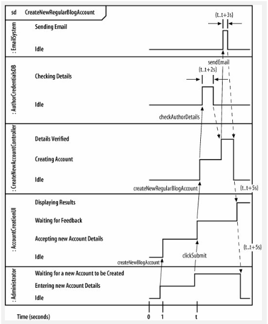
H. Interaction Overview Diagram ialah suatu diagram yang dipakai untuk melakukan visualisasi tentang kerjasama yang terjadi antara sequence diagram dengan activity diagram. Diagram ini juga biasanya disebut sebagai suatu activity diagram yang mana semua aktivitas digantikan dengan sequence diagram. Dapat juga disebut sebagai sequence diagram, lalu notasi activity diagramnya dibuat dapat rinci dipakak untuk memberikan informasi terkait aliran pengawasan.
Fungsi :
1. suatu diagram yang dipakai untuk melakukan visualisasi tentang kerjasama yang terjadi antara sequence diagram dengan activity diagram.
Komponen contoh